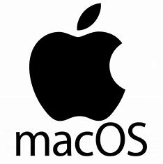

Windows OS is a widely-used operating system developed by Microsoft Corporation, known for
its user-friendly interface and extensive compatibility with various software and hardware
components.
Linux OS is a free and open-source operating system renowned for its robustness,
flexibility, and customization options, making it a popular choice for users ranging from individual
enthusiasts to large-scale enterprises.

macOS is the proprietary operating system developed by Apple Inc., known for its sleek
design, seamless integration with Apple hardware, and a rich ecosystem of applications tailored for
creative professionals and everyday users alike.